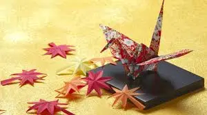
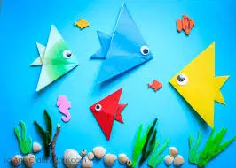

.webp)
Class-1
- In this class children learns ninja star.
- The origami ninja star is fun and easy to fold.
- The weight, form and shape is even and balanced all around making it also fun to throw.

Class-2
- In this class children learn how to make Crane (Tsuru) In Japanese folklore, cranes are said to live a thousand years. Because of this, an o rigami crane represents a long, healthy life. Cranes are also viewed as symbols of happiness, and good luck.

Class-3
- Fish (Sakana) Fish are generally seen as symbols of happiness, good health, and well-being. Due to the fact that fish are able to roam the oceans as they please, they are also symbols of freedom
Class-4
- Frog (Kaeru) The frog has long been seen as a symbol of good fortune in Japanese culture. It is a common tradition to carry a small frog figurine in the bottom of ones coin purse or wallet to insure that even when money is spent, it will come back to you.
.jpg)
Class-5
- In this class children learn how to make turtle
- Although this origami turtle looks pretty complete and awesome, it's surprisingly somewhat easy to fold. Nice looking turtles usually require complex folding techniques, and simple turtles although easier to fold, is rather plain and unsatisfying.
.webp)
Class-6
- In this class children learn how to make dragon
- A dragon is usually represented as a huge, bat-winged, fire-breathing, scaly lizard or snake with a barbed tail.